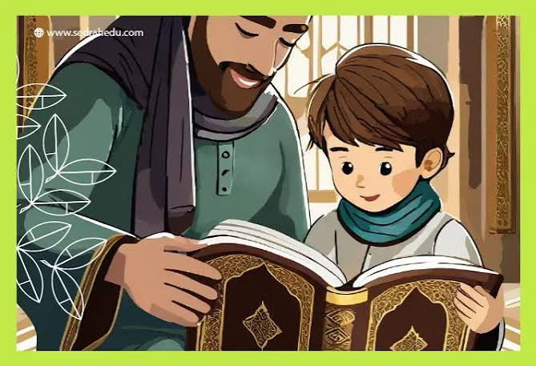

نساعد أبناءنا وبناتنا على حفظ كتاب الله، وتعلم أحكام التجويد والتلاوة في بيئة تعليمية مميزة وعلى أيدي محفظين متخصصين.
نعمل على توفير بيئة مناسبة تساعد الطالب على حفظ القرآن الكريم وإتقان التلاوة وفهم أساسيات التجويد.
برامج متنوعة للحفظ والمراجعة تناسب مختلف الأعمار والمستويات.
متابعة فردية وتصحيح الأخطاء في القراءة ومخارج الحروف وأحكام التجويد.
نهتم بالجانب التربوي والأخلاقي بجانب حفظ كتاب الله تعالى.
نخبة من المحفظين والمحفظات لمتابعة أبنائنا وبناتنا خلال رحلة حفظ القرآن الكريم.

محفظ قرآنمتخصص في التجويد وتصحيح التلاوة
محفظ متخصص في تعليم أحكام التجويد وتصحيح التلاوة، مع الاهتمام بمخارج الحروف وأداء الطالب أثناء القراءة.
متخصص في المراجعة المكثفة
يهتم بتثبيت المحفوظ ومتابعة الطلاب من خلال خطط مراجعة منظمة تساعد على المحافظة على القرآن المحفوظ.
متخصص في الحفظ والمراجعة
يتابع الطلاب في مراحل الحفظ المختلفة مع وضع خطة مناسبة لكل طالب ومتابعة تقدمه بصورة مستمرة.
محفظة قرآن كريم
تهتم بتحفيظ القرآن الكريم للطالبات ومتابعة الحفظ والمراجعة بطريقة مبسطة ومناسبة لكل مستوى.
محفظة قرآن كريم
متابعة الطالبات في الحفظ والمراجعة مع الاهتمام بالتدرج في الحفظ وتحسين مستوى التلاوة.
محفظة قرآن كريم
تقدم متابعة مستمرة للطالبات مع التركيز على تثبيت الحفظ وتحسين القراءة والتلاوة.
اختر الحلقة المناسبة حسب هدف الطالب ومستواه في حفظ القرآن الكريم.
تهدف الحلقة إلى تحسين قراءة الطالب وتعليمه أحكام التجويد ومخارج الحروف.
برنامج مخصص لمراجعة المحفوظ وتثبيته من خلال خطة مراجعة منظمة.
برنامج متكامل يجمع بين حفظ الجديد ومراجعة ما تم حفظه بصورة مستمرة.
بيئة تعليمية مناسبة للطالبات مع متابعة الحفظ والمراجعة بصورة تدريجية.
برنامج مبسط للناشئة يساعدهم على بناء أساس جيد في حفظ القرآن والتلاوة.
تهدف إلى تثبيت الأجزاء المحفوظة ومساعدة الطالب على الاستمرار دون انقطاع.
نظام مبسط لمتابعة الطلاب والمحفظين والإدارة باستخدام تقنيات Front-End.
متابعة الحفظ والمراجعة والحلقة والمدرس والتقدم في البرنامج.
متابعة الطلاب وتسجيل الحضور وتقييم مستوى الحفظ والمراجعة.
عرض إحصائيات المكتب ومتابعة الطلاب والمحفظين والحلقات.
تواصل معنا لمعرفة مواعيد الحلقات والبرامج المناسبة للطالب.